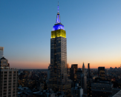
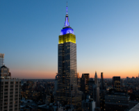
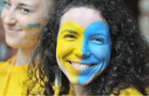

Україна
після перемоги
Ми незламний народе великої країни!
Ми пишаємось нашим минулим, цінуємо те, що маємо,
та готуємось до нашого спільного грандіозного майбутнього,
яке обов’язково настане після перемоги!
Ми незламний народе великої країни!
Ми пишаємось нашим минулим, цінуємо те, що маємо,
та готуємось до нашого спільного грандіозного майбутнього,
яке обов’язково настане після перемоги!

Минуле
Формування ментальності українців

Люди землі
Ми - хлібороби. На СВОЇЙ землі
господарюємо, сворюємо,
дбаємо про оселю


Громади
Ми з покон-віків - громади,
які включають об’єднання
індивідуальностей

Історія
Фольклор розповідає правду,
бо ми учасники, творці історії
та представляємо її, так як є

Творчість
У нас колядки, щедрівки, де
возвеличують господаря,
господиню, урожай
Козаки - це державність!
Саме козаки були авторами та реалізато-
рами ідеї української держави та її легіти-
мації у міжнародній спільноті як незалежної
держави

Цінності
Відвага, вірність, здатність до самопожертви, любов до Батьківщини - такі характеристики успадкував
український народ у козаків
Відвага та безстрашність
Турецький літописець Наїма
писав про запорожців:
"Можна впевнено сказати, що
неможливо знайти на цілій
землі сміливіших людей, які так
мало б дбали про моє життя і
так мало боялися смерті"

Прагнення до неба
Блакитне небо на прапорі України та жовте жито, ще одна ознака
нашого прагнення думками відірватися від землі та полетіти в
безкрайнє небо, вийти за межі простору.
Саме тому українці реалізовували прагнення вийти за межі за
допомогою розвитку авіаконструкторських заводів.
Підприємство "Антонов створило гордість України, який став
сиволом українського непереможного духу Мрію найбільший
транспортний літак у світі.
Сьогодення: період трансформації
Хто ми сьогодні?
Ми показуємо усьому світові
як говорити правду в очі та
бути вірним своєму народу,
своєму вибору та стояти за
нього ми чесні з собою та
іншими, відважні та стоїмо
один за одного
Ми подаємо приклад всьому
світові, як жити в умовах
невизначеності, та ще й
знаходимо в собі сили
підказувати іншим, що робити
для підтримки миру у всьому
світі - ми креативні.
Ми не піддаємось
залякуванню та продовжуємо
маленькими кроками досягати
своєї мети ми сильні духом,
в нас є воля. Свобода -
найбільша цінність для нас.
Ми можемо жити без вказівок, та самоорганізовуватись, спираючись лише на гуманістичні, людські цінності ми за мир у всьому світі, і ми зможемо показати, як цього досягти.
Продовжуємо жити, працювати та надихати весь світ!
 



Долучайся до марафону: будуємо нову омріяну Україну разом!
Поділись думками, якою ти хочеш бачити Україну після перемоги?
Економіка Я хочу, щоб економіка розвивалася, адже ця галузь допоможе всім людям України отримувати достойну зарплату
Туризм Щоб все більше туристів приїжджало в Україну подивитися на наші міста
Енергетика зараз електро енергії у нас дуже мало тому щоб цьому запобігти наступного разу потрібно це розвивати
IT дуже важлива професія яка теж допоможе розвивати нашу країну у технічних напрямках!
Безпека Щоб у нашій країні був безпечніший рух, щоб на перехрестях де не працюють світлофори стояли регулювальники
Освіта Щоб в Україні було більше успішних учнів, щоб все більше студентів отримували краще майбутнє
Майбутнє
Майбутнє України - це її люди!

Україна зможе зформулювати свої ціннісні орієнтири та транслювати їх на весь світ, а саме: Можливо все, навіть те, у що ви не вірите! А вихід за рамки самого себе - це більш гуманістично, ніж постійно прагнути вийти за рамки технологічного розвитку
Українці, як нація, стають зразком волевиявлення та прикладом побудови демократичних відносин не ”згори донизу”, а “знизу догори”!

Україна стає найбільш популярним та
поширеним символом свободи, віри,
правди та сміливості у всьому світі.
Все буде Україна!

Україна запрошує до першого в світі проекту колективної відбудови країни, в якій будуть задіяні ініціативи різних країн світу. Таким чином Україна дає можливість всьому світові відчути, що таке колективна стратегія та транслює нову етику відносин в світі

Україна згадає про своє прагнення до неба та сонця, й запропонує новий проект: щоб закінчити війни на Землі, давайте будемо співпрацювати для нашого нового життя в космосі
Ми - нація вільних людей, які будують нову свою країну!



{kind=link}
{kind=link}
{kind=link}
{kind=link}
{kind=link}
{kind=link}
{kind=link}
{kind=link}
{kind=link}
{kind=link}
{kind=link}
{kind=link}
{kind=link}
{kind=link}
{kind=link}
{kind=link}
{kind=link}